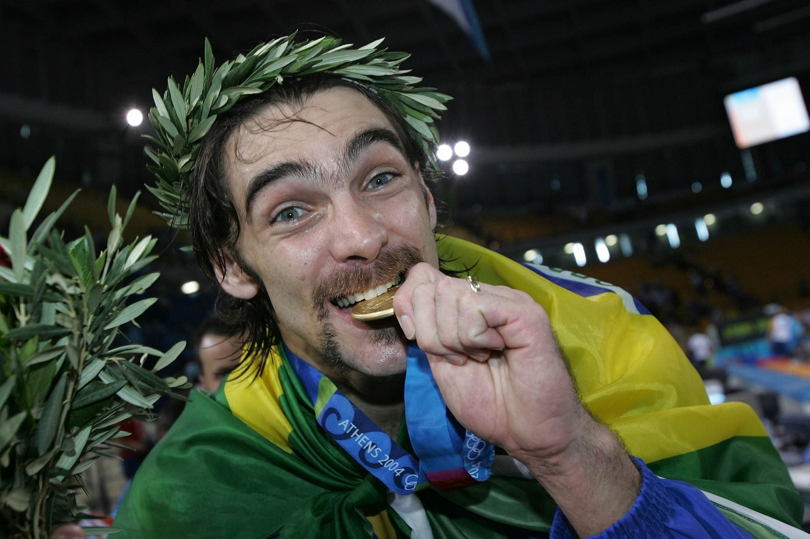
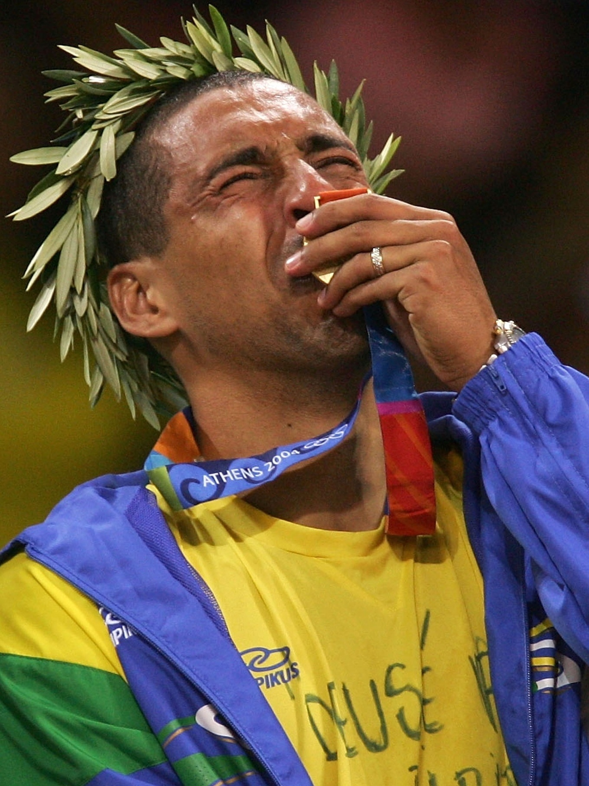
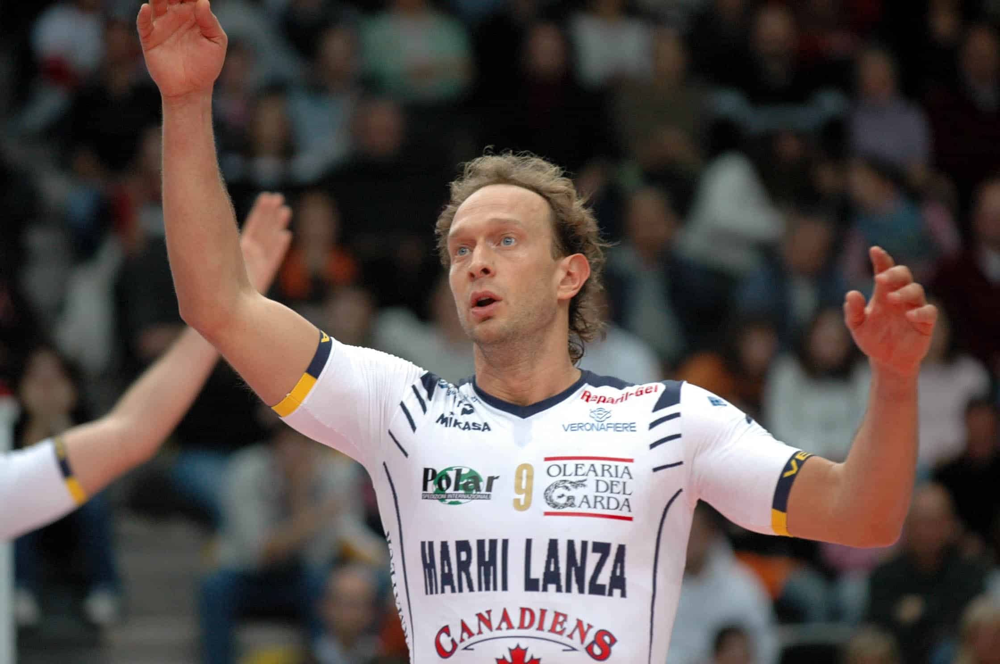

Giba — O Rei do Ataque
Giba conquistou 3 medalhas olímpicas, foi
Em todas essas conquistas, era o
É membro do Hall da Fama do voleibol mundial!

Serginho - O Melhor Líbero da História!
Serginho é reconhecido como o
No Rio 2016, foi eleito MVP dos Jogos Olímpicos mesmo sem marcar nenhum
ponto !

Lorenzo Bernardi - O Melhor do Século 20
Em 2001, foi considerado o
Sendo pioneiro no estilo de ataque chamado "pipe"

Sheilla Castro - A Rainha do Feminino
Sheilla tem
É uma das atletas